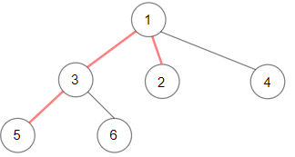
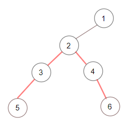
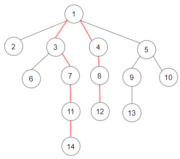

| Category | Difficulty | Likes | Dislikes |
|---|---|---|---|
| Algorithms | Medium | 640 | 9 |
facebook | doordash
Given a root of an N-ary tree, you need to compute the length of the diameter of the tree.
The diameter of an N-ary tree is the length of the longest path between any two nodes in the tree. This path may or may not pass through the root.
(Nary-Tree input serialization is represented in their level order traversal, each group of children is separated by the null value.)
Example 1:

Input: root = [1,null,3,2,4,null,5,6]
Output: 3
Explanation: Diameter is shown in red color.Example 2:

Input: root = [1,null,2,null,3,4,null,5,null,6]
Output: 4Example 3:

Input: root = [1,null,2,3,4,5,null,null,6,7,null,8,null,9,10,null,null,11,null,12,null,13,null,null,14]
Output: 7
Constraints:
1000.[1, 104].